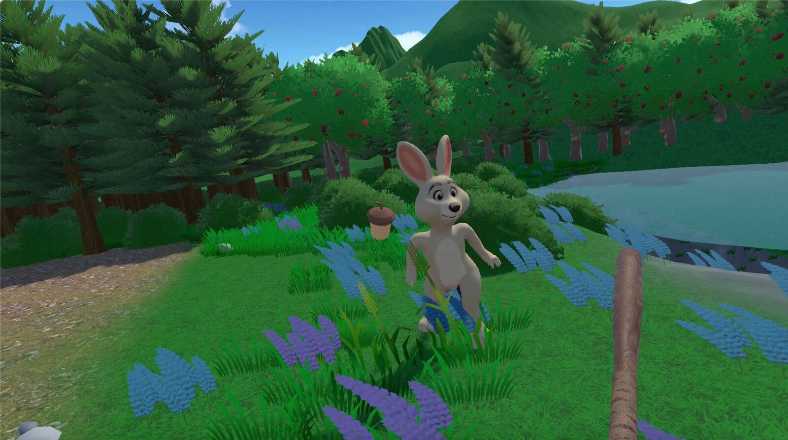
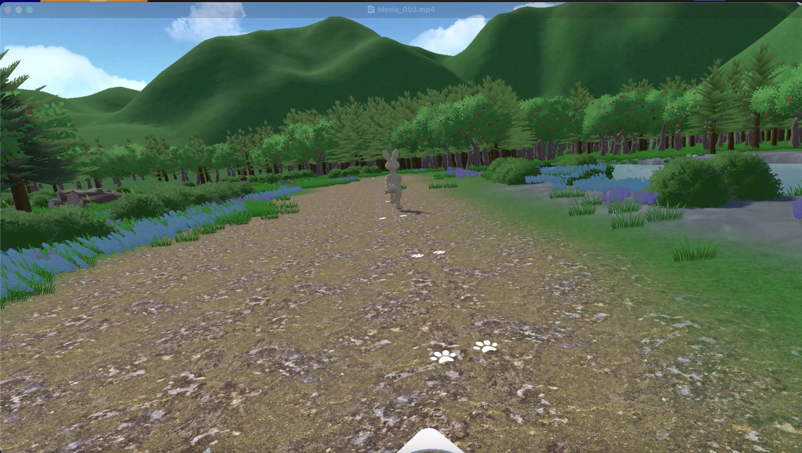
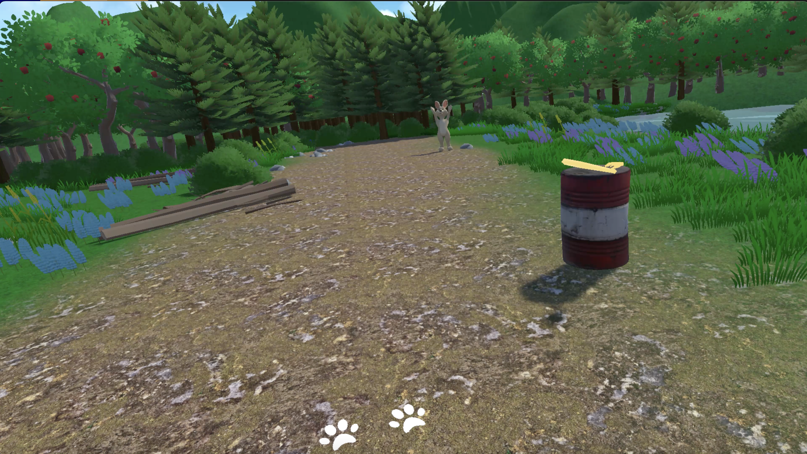
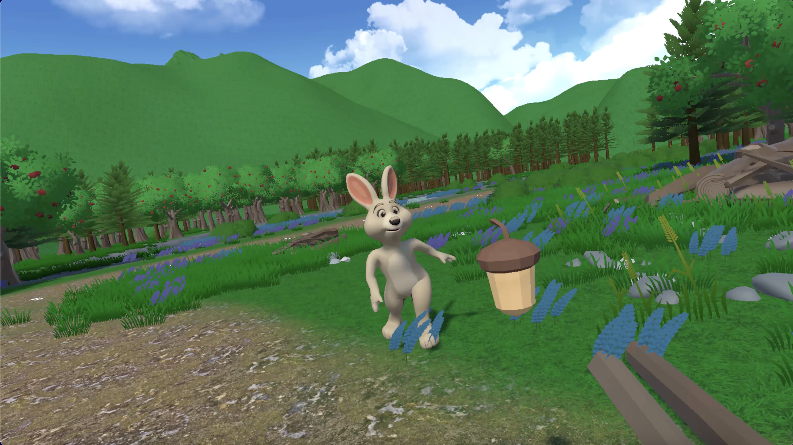
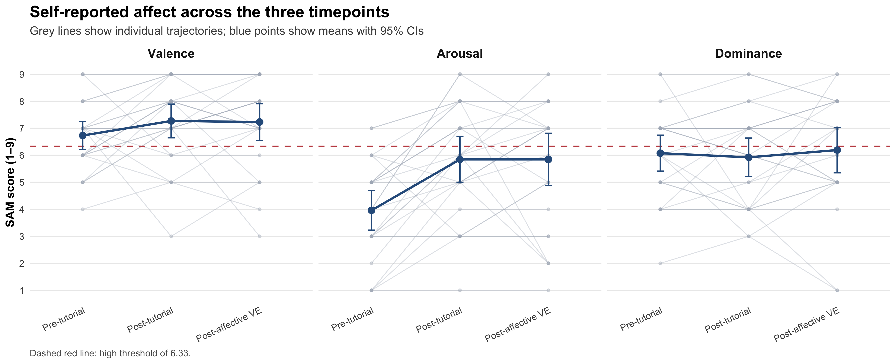
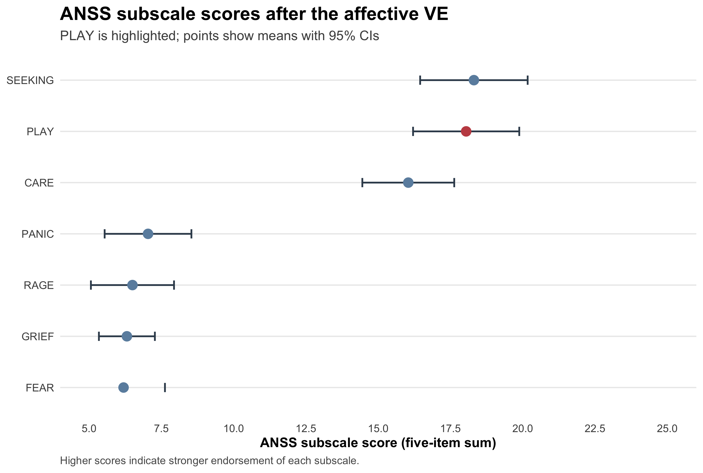
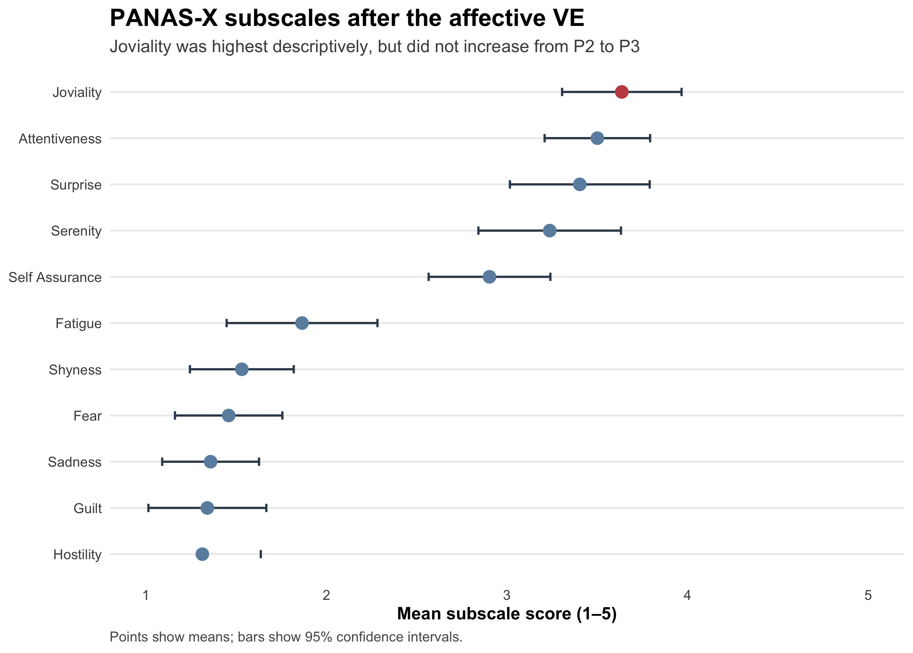
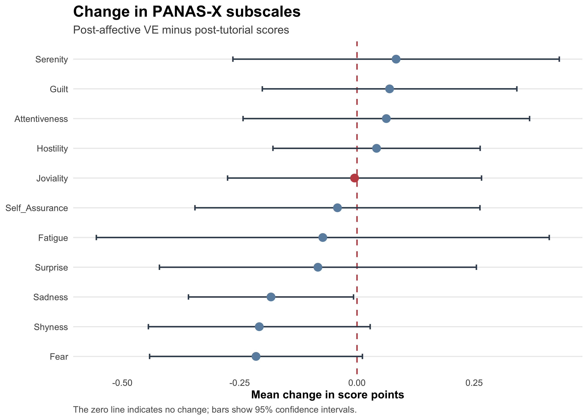
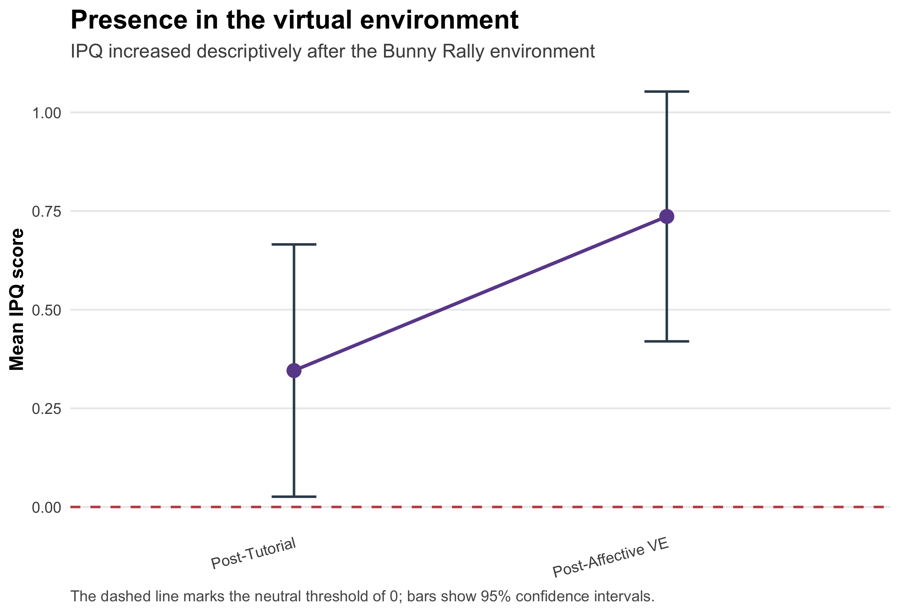
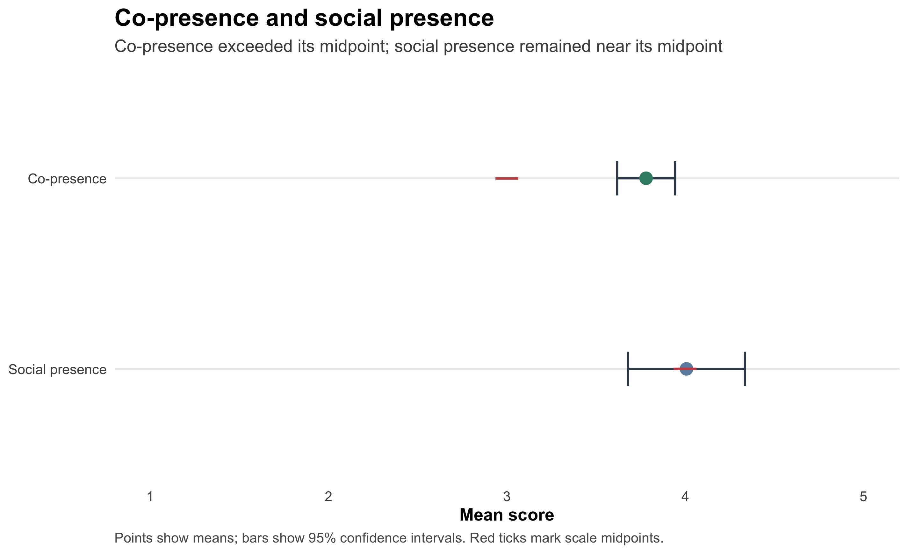

03 / Environment
Bunny Rally
A bat and ball interaction with a humanoid bunny in a forest, where the bunny throws an acorn and the player hits it back.

Start with the interaction
Bunny Rally begins in a bright forest clearing, where the player follows a path towards a bunny waiting at the interaction area. A glowing bat rests on a barrel to signal what to do next. Once the bat is picked up, the bunny throws an acorn towards the player, who must hit it back for the bunny to catch. Successful hits trigger a celebratory jump and “Yay” vocalisation, while missed acorns are retrieved before the rally continues.
The interaction is designed around turn-taking, agency, and reciprocal responses rather than passive observation. The player controls their movement, aim, hand choice, and swing, while the bunny adapts its behaviour through throwing, catching, running, retrieving, and celebrating. Across the interaction, the difficulty changes according to the player’s accuracy and catch streak, helping maintain a balance between challenge and successful back-and-forth play.
What happens in this world
The main NPC is a friendly animated bunny that acts as both the interaction partner and the focus of the experience. It navigates between different spots using a NavMesh, throws acorns towards the player, reacts when an acorn is caught, and occasionally waves, approaches the player, or plays friendly sounds when the player is inactive. The scene is designed as a stylised outdoor environment with terrain, trees, bushes, fences and mountains. The player uses VR controls to move around, pick up the mallet, and physically swing it to hit the incoming acorns back towards the bunny. Successful catches generate a "Yay" response, while missed acorns can land on the ground or be collected by the bunny.
A key design decision was to make the interaction physical and easy to understand: the glowing mallet and hand hint guide the player, while haptic feedback, sound effects, animations, and visual celebrations reinforce successful actions. The bunny’s movement and behaviour make the scene feel more alive, while its occasional friendly interactions help create a welcoming atmosphere rather than making it feel like a purely competitive challenge. The difficulty also adapts to the player’s performance by tracking accuracy, catch streaks, misses, throw speed, throw frequency, spread, and the number of acorns thrown. If the player is struggling, the bunny moves less often and the acorns become easier to hit; if the player performs well, the level gradually increases the speed, spread, movement, or number of acorns. This was designed to keep the experience challenging while still allowing different players to enjoy and learn the rules of the interaction at their own pace.
Gallery



How it was tested
The study used a within-subjects design with 26 participants, who completed a tutorial VE followed by the Bunny Rally environment. SAM, PANAS-X, and ANSS were collected across three timepoints, while IPQ, co-presence, and social presence were measured after the environments. Behavioural telemetry recorded throws, catches, hits, approaches, and bat swings.
What this experiment showed
Partial support for PLAY-consistent engagement
- Valence (partly met)
- Arousal (not met)
- Dominance (partly met)
- Reciprocity (met)
- Sociality (met)
- Joy (partly met)
- PLAY (not met)
Filled: met. Half: partly met. Empty: not met.
The Bunny Rally environment produced high positive valence and co-presence, but the evidence did not show a clear increase in arousal, dominance, PLAY-specific responses, or social presence. Repeated throws, swings, hits, catches, and bunny reactions provide preliminary evidence of reciprocal engagement, although the available behavioural data could not verify turn-by-turn reciprocity.
H-SAM-1 High valence, arousal, and dominance at P3Partly supported
Valence was high after the affective VE (M = 7.23, above the 6.33 threshold), but arousal (M = 5.85) and dominance (M = 6.19) did not exceed the threshold.
H-SAM-2 SAM dimensions increase from P2 to P3Not supported
Valence changed by −0.04, arousal did not change, and dominance increased by 0.27. None of these changes was statistically significant after correction.
H-PANASX-1 and H-PANASX-2 Joviality increases most and is highest at P3Partly supported
Joviality was the highest post-affective PANAS-X subscale, but it did not increase from P2 to P3 and was not significantly higher than every other subscale.
H-ANSS-1 and H-ANSS-2 PLAY increases most and is highest at P3Not supported
PLAY increased slightly, by approximately 0.03 points on the subscale-mean scale, but RAGE and SEEKING showed larger increases. SEEKING also had a higher post-affective score than PLAY.
H-CP-1 Co-presence is above the scale midpointSupported
Co-presence was above the midpoint of 3 (M = 3.78), indicating that participants experienced the bunny as a present interaction partner.
H-SP-1 Social presence is above the scale midpointNot supported
Social presence was close to the midpoint of 4 (M = 4.01), but the result did not provide convincing evidence that it exceeded the midpoint.
H-TEL-1 Behavioural telemetry indicates reciprocal engagementInconclusive
Participants produced repeated throws, catches, hits, and swings while the bunny responded through catching, retrieving, and celebrating. This pattern is consistent with reciprocal engagement, but the telemetry contained aggregate counts rather than time-stamped event sequences, so turn-by-turn reciprocity cannot be established.
Explore the evidence






The plots show descriptive patterns. The hypothesis decisions are based on the paired and threshold two-sided tests reported in the paper, with multiple-comparison correction applied within measure families. Reciprocity is therefore described as preliminary reciprocal engagement rather than confirmed turn-by-turn contingency.
Keep exploring the project
| Document | Format |
|---|---|
| Final paper | |
| Literature review |
Source code
Each archive holds the C# scripts, the Unity project settings and the package manifest, which is enough to read the code and see which Unity version and packages it was built with. Models, textures, audio and other third-party assets are left out to keep the archive small.